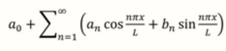
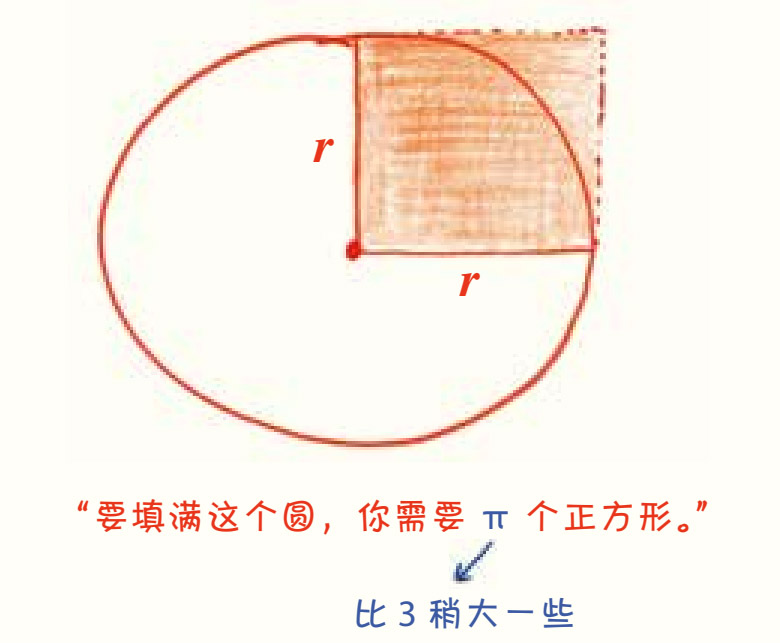
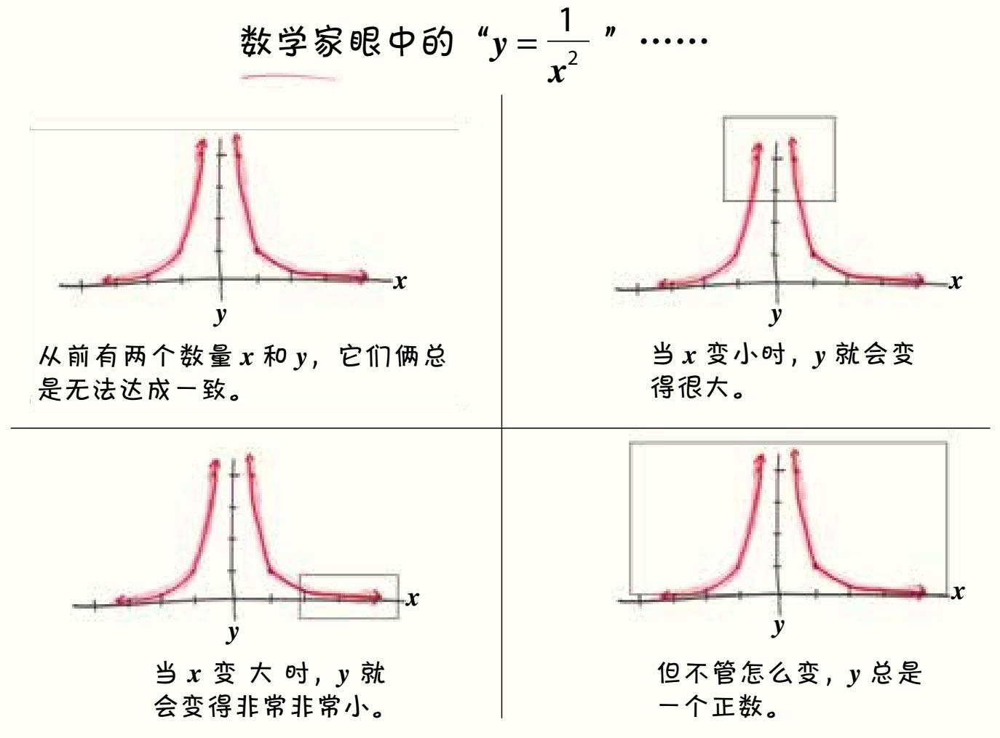
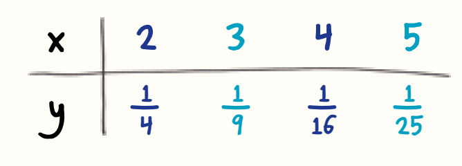
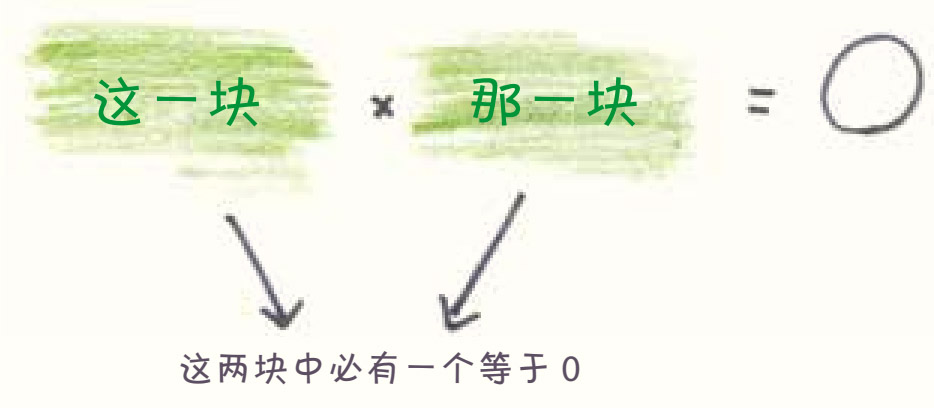
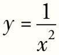
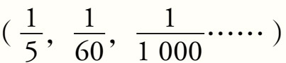
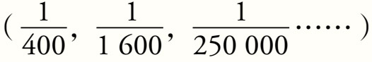
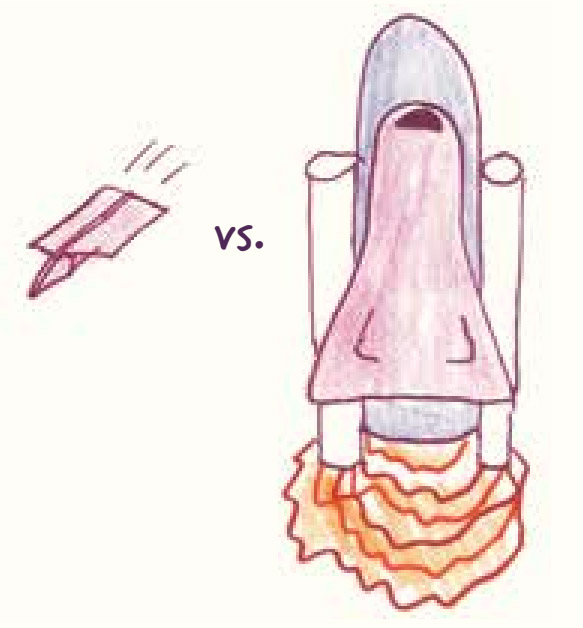
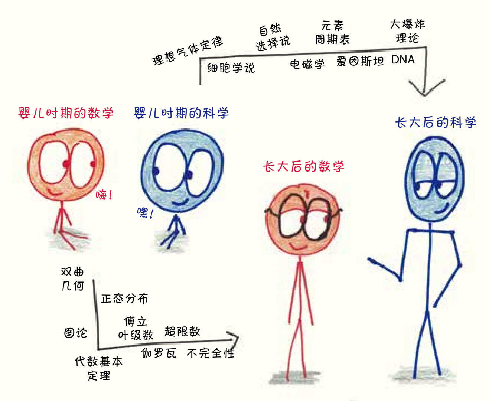

第3章
数学家眼中的数学什么样？
很简单，数学在数学家的眼中，就像一种语言。
这是一种有趣的语言，紧凑、简洁，但读起来很费劲。在我一口气读完《暮光之城》的五章时，也许你连数学课本的一页都还没读完。1这种语言很适合讲述某些故事（比如曲线和方程之间的关系），但不太适合讲其他故事（比如女孩和吸血鬼的恋爱过程）。数学有着独特的、不可能在其他语言中找到的词汇。比如说，即使我能用简单的语言描述

，对于不熟悉傅立叶分析的人来说，这个式子也还是毫无意义，就像不理解青春期荷尔蒙的人眼中的《暮光之城》一样。但在某种程度上，数学也是一门常见的语言。为了更好地领悟其中真谛，数学家采用了大多数读者都熟悉的策略——在头脑中形成图像。2他们在头脑中解读数学的符号和表述，剔除分散注意力的技术细节，再把读到的和已知的知识联系起来。尽管这听起来有些不可思议，但在阅读数学的过程中，数学家的情绪会被调动起来，他们有时心旷神怡，有时也会焦躁不安。
当然，这么短短一章没法一下子让你们学会流利的“数学语言”，就像我没法教会你们流利地说俄语一样。同时，正如文学学者可能会对英国诗人杰拉德·曼利·霍普金斯的对偶句或一封措辞模棱两可的邮件提出异议，由于经验和想法不同，数学家也会对数学中的细节意见不一。
即便如此，我还是希望提供一些超越字面意思的翻译，让大家稍微了解一下数学家在实际阅读数学材料时可能用到的策略。我们姑且称之为“烂插画理论101”吧。
我常从学生那里听到这样一个问题：“先乘以11还是先乘以13有关系吗？”这个问题的答案（“没关系”）远没有问题所揭示的现象有意思：在学生们眼中，乘法是一个动作，是要去“做”的一件事。所以，对我来说最难的课程任务之一，就是要让他们明白，其实有时候我们该学会的是“不做”。
我们不必总把7×11×13当作一个命令，有时候只要当它是个数字就行了，不需要做任何处理。
数学家眼中的“S=πr2”……

每个数字都有许多别名和艺名。你也可以称这个数字为“1002-1”，或“499×2+3”，或“5005÷5”，或“杰西卡”，“那个可以拯救地球的数字”，或老派的“1001”。但是，如果朋友们平时就叫它“1001”，那么7×11×13就不是乱起的什么古怪绰号了，而是它出生证明上的大名。
7×11×13是1001分解质因数得到的结果，包含了很多信息。
首先，我想介绍一些关于分解的重要背景知识。加法是最无聊的分解方式，把1001分解成两个数字的和纯粹是在消磨时间：你可以把它写成1000+1，或者999+2，或者998+3，或者997+4……直到你无聊到开始打瞌睡。这样的分解没有告诉我们1001有什么特别之处，因为所有的数字都可以以几乎相同的方式分解。（例如，18可以写成17+1，或者16+2，或者15+3……）这看起来就像把一个数字拆分成两堆东西。无意冒犯，但是那两堆东西确实包含不了什么信息。
乘法，才是数字们开派对的方式。为了拿到活动的邀请函，你得学会运用我们的第一个数学阅读策略：在头脑中形成图像。
正如上一幅图所示，乘法其实就是一堆按一定顺序排列的小方块。如果每个小方块的边长是1，1001就可以看作是由7×11×13个小方块堆成的建筑物。不过，乘法能告诉我们的可不止这些。
你可以把这个建筑物看作13层的高楼，每层有77个小方块；如果你歪着头看，它就变成了11层，每层有91个小方块；你也可以把头歪到另一边，再看看它，它就只有7层了，但每层有了143个小方块。有了分解质因数，这些分解1001的方法一目了然，但我们很难从1001这个大名中直观地看出这些。
一个数字的质因数就是它的DNA。我们从质因数中可以看到一个数字所有的成分和分解方式，可以知道有哪些数能拆开它。如果把数学比作烹饪课，那么7×11×13不是煎饼1001的食谱，而是这个煎饼本身。
对非数学专业的粉丝来说，π是一个神秘的符号，是数学巫术的象征。

他们记住了无理数圆周率的小数点后成千上万的数字，还将人类最伟大的创造（甜点派）与最无聊的创意（谐音梗）结合，把3月14日作为国际圆周率日。对大众而言，π是他们痴迷、敬畏，甚至膜拜的对象。
可对于数学家来说，π不过就是个比3多一点儿的数字而已。
圆周率无穷无尽的小数点后数字迷住了外行，数学家对此却不以为意。他们知道精确不是数学的唯一追求，为了更快速地估算，合理利用近似值才是聪明的做法。当阅读数学的人建立直觉时，近似值有助于使问题简化。没错，不要过分追求精确，就是我们在数学阅读中的第二个重要策略。

回到公式S=πr2，这个公式在数学题中太常见了，许多学生一听到“圆的面积”，就会条件反射般地说出“π乘以r的平方”，简直像被洗脑了一样。可大家有没有想过，这个公式到底是什么意思？它为什么能成立？
好了，暂时忘了3.14159吧，放空你的头脑，看看这些图形。
r是圆的半径，这是一个长度。
r2是一个小正方形的面积，正如上一幅图所示。
现在，快问快答：图中圆的面积和正方形的面积有着怎样的关系？
显然，圆的面积大于正方形面积，但并非刚好等于它的4倍（4个正方形不仅能覆盖整个圆，4个角还有一些多出来的部分）。如果仔细观察，你可能会发现这个圆的面积是正方形面积的3倍多一点儿。
这正好和公式所表达的一致：面积=（比3多一点儿）×r²。
如果你想验证一下——精确的π值为什么是3.14多，而不是3.19多？——你也可以做做证明题（证明的方法很多，其中有几个还挺可爱的；我最喜欢的是像剥洋葱一样把圆形一圈圈剥开，然后把这些圈圈拉直，按从大到小的顺序往上堆成一个三角形）。3但是数学家嘛，总有自己的坚持，他们并不总是通过最基本的原理来证明一切。其实大家都一样，木匠啦，动物园管理员啦，都会有那些乐于使用却不了解具体构造的工具，他们只要知道怎么用就好了。
“请画出这些解析式的函数图像”是数学作业里的常见题，我也出过这类题目。但是，这个问题暗含的导向并不正确——似乎画出图像，故事就结束了。实际上，绘制图像和求解方程或执行运算不同，它不是终点，而只是一种手段。
数学家眼中的“(x-5)(x-7)=0”……

图像应该是数据可视化的工具，是讲述数学故事的图片。它代表了第三个强大的数学阅读策略：将静态转化为动态。
回到上面的等式。在

中，x和y表示满足某种精确数量关系的一对数字，这样成对的x和y有很多。下面是几对例子：我们现在可以看出一点儿端倪了，但是我们的视野和我们的技术一样存在局限，表格的容量是十分有限的。尽管满足这个等式的x和y有无数组，但表格就像证券报价机一样，每次只能显示少量数据，无法穷举一切成对的数字。怎样能一下看到所有的x和y呢？我们需要更好的可视化工具——一个数学界的电视屏幕。
于是，函数图像诞生了。
把x和y分别作为横坐标和纵坐标，我们就可以将每一对无形的数字都转换成一个再简单不过的几何图形：一个点。无穷多组数字对应成了无穷多个点，无穷多个点构成了一条曲线。就这样，关于数学的故事翻开了崭新的一页——这是一个关于运动和变化的故事。
• 在x变小至趋近于0

的过程中，y会经历爆炸式增长(25，3600，1000 000……)• 在x逐渐变大(20，40，500……)的过程中，y会缩小成很小的分数

• x值可以为负（-2，-5，-10），但y始终是正数。
• 两个变量都没有值为0的情况。
好吧，这一段故事可能不够跌宕起伏，但新手（认为数学是一串令人麻木的无意义符号）和数学家（认为数学是一种连贯的、可以用于交流的工具）之间的本质区别就在于，数学家具备这样的阅读和思考策略。函数图像为这些死气沉沉的等式赋予了生命，让它们动起来、活起来。
组块是一种心理学上的记忆方法。这说的可不是在喝太多酒后排出一块块废料的方法，而是数学家不可或缺的高效思维技巧，也就是我们的第四个数学阅读策略。
“组块”的意思是将一组分散的、难以完全保留的细节打包，作为一个整体，重新定义为一个单元。上面的等式就是一个简单的例子。一个善于组块的人会无视等式左边的细节，是x还是y？是5还是6？是+还是-？不知道，也无所谓。相反，他只会看到两大块，这两块形成了式子的主体：这一块×那一块=0。
数学家眼中的x2和2x……

如果你熟悉乘法，就一定知道0是一个特殊的数。
6×5？不为0。
18×307？不为0。
13.916 32×4 600 000 000 000？不用计算器我们也知道，这肯定也不为0。
在乘法的世界里，0是独一无二的。相比其他数字，0特殊而难以捉摸。比如，我们有很多办法可以得到6（3×2，1.5×4，1 200×0.005……），但有且只有一种方法可以让两个数字相乘得到0，那就是其中一个数字本身就为0。
这就是我们组块的结果：因为这个式子的得数是0，所以左侧必有一块是0。如果是第一块（x-5）等于0，那么x一定是5。如果是第二块（x-7）等于0，那么x一定是7。
这个方程中的未知数就这样解出来了。
组块不仅能净化胃，还能净化思维，它使世界更易于理解，而且，随着学的东西越来越多，你会变得更善于进行组块式思考。一个高中生可能会把一整行代数运算看成“求出梯形的面积”，一个大学生可能会把几行密密麻麻的微积分式看成“计算旋转体的体积”，而一个研究生可能会把半页令人生畏的希腊字母术语组块成“计算集合的豪斯多夫维数（Hausdorff dimension）(2)”。每上升一个学习阶段，你都会学到些具体的细节知识点：什么是梯形？积分是怎样的？豪斯多夫维数是什么？怎样可以求得？
但是，学会这些具体的细节知识点本身并不是目的，我们真正的目的是在学会它们以后忽略它们，再把注意力放在更大的、组块后的全景上。
如果把指数和底数调换位置，会发生什么呢？
当然，在门外汉看来，换不换好像没什么区别。不过是一串不知所云的符号互相交换了位置，从胡言乱语变成了乱语胡言。谁在乎呢？但在数学家看来，这就像天空和海洋、山和云，或者鸟和鱼的对调（可都是惊天动地的大事）——调换两个符号的位置，一切都变了。
以上面两个表达式为例，假设x=10。
这样我们就可以得到102=10×10，也就是100了，这个数字可不小。一年内教100个学生，开车去100英里外的一个主题公园，或者花100美元买一台旧电视，都不是开玩笑的。（至于那个101斑点狗的故事——一家人能养100多只斑点狗？简直多得令人难以置信）
但210比100还要大得多，它等于2×2×2×2×2×2×2×2×2×2，也就是1 024。我大概要花10年才能教1 024个学生；除非是去世界上最大的主题公园，否则我不可能接受1 024英里那么远的车程；要1 024美元才能买到的电视机，不用说，一定非常高端。（一个人如果养了1 024只斑点狗，那么就不只是令人难以置信，很可能已经涉嫌虐待动物了）
当x取更大的值时，这两个表达式之间的差距就会进一步扩大。不对，“扩大”这个词听起来程度太弱，就像把大峡谷描述成“地上的一条缝”。应该说，随着x的增长，x2和2x之间的差距也呈现出了爆炸式的增长。
不用说，1002是个相当大的数字，即100×100，等于10 000。
然而，2100和1002比起来更是个天文数字，它等于2×2×2×2×2×2×2×2×2×2×2×2×2×2×2×2×2×2×2×2×2×2×2×2×2×2×2×2×2×2×2×2×2×2×2×2×2×2×2×2×2×2×2×2×2×2×2×2×2×2×2×2×2×2×2×2×2×2×2×2×2×2×2×2×2×2×2×2×2×2×2×2×2×2×2×2×2×2×2×2×2×2×2×2×2×2×2×2×2×2×2×2×2×2×2×2×2×2×2×2，也就是1 267 650 600 228 229 401 496 703 205 376，大概是十亿乘十亿再乘一兆。
如果这两个数字衡量的是重量，那么1002磅相当于一辆载满砖头的皮卡重量，的确不轻，但与2100磅不可同日而语。
2100磅相当于10万个地球的重量。
对于没有经过数学训练的人而言，x2和2x可能看起来没什么不同。但是，随着在数学方面经验的增加，你辨别这种“鬼画符”语言的能力会越来越强，这种差异对你来说会越来越显眼。不久后，这会变成一种本能，开始调动你的情绪。对了，这就是阅读数学的最后一个关键策略。你在阅读那一行行数学表达式时，心情会跌宕起伏，能感受到满足、同情、震惊……各种各样的情绪。
最终，你就会觉得把x2和2x混淆，就像用一辆皮卡拖动10万颗行星一样荒谬。
